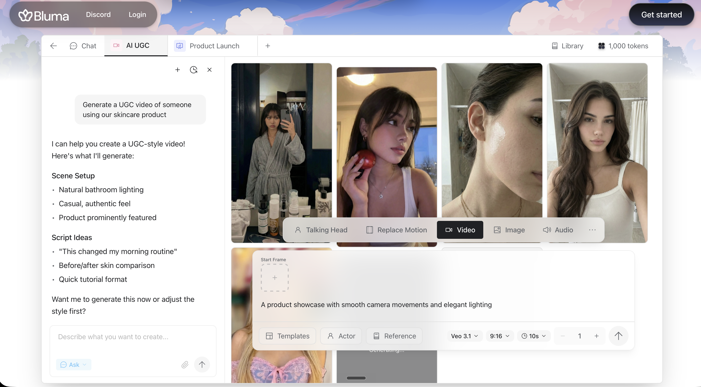

VidCloner vs Bluma: Which Is Better for Recreating Viral Ads?
Updated June 16, 2026·5 min read
TL;DR
VidCloner uses AI avatar-swapping and voice cloning to replace the actor in any viral video, starting at $19/month.
Bluma is a timeline editor that de-edits existing short-form videos from URLs for manual reconstruction, costing $36/month.
Choose VidCloner to automatically clone yourself or replace actors with personal avatars; choose Bluma if you need a hands-on browser editor to restructure video clips and generate variations.
Recreating winning video formats is the fastest way to hit high-view counts on social feeds. This guide compares VidCloner and Bluma to help you choose the best tool for duplicating and editing viral short-form content.
What is the main difference between VidCloner and Bluma?
The primary difference is the replication methodology. VidCloner is an AI generator that swaps the face, body, and voice of an actor in an existing viral video with your own avatar. Bluma is an editing workspace that takes a video URL, parses its timeline into editable sections (audio, text, clips), and lets you manually rebuild or customize it.
VidCloner: Link-to-clone avatar swapping, voice replication, and automated face matches.
Bluma: Timeline de-editing, spreadsheet bulk variations, and timeline tracks.
How do the costs and rendering workflows compare?
VidCloner offers plans starting at $19/month for 5 credits, allowing creators to clone actors instantly. Bluma costs $36/month, providing timeline edits but requiring you to manually shoot or upload your own replacement footage to put on the track.
1 click
is all it takes on VidCloner to swap actors in a viral clip, compared to manually rebuilding timelines track-by-track on Bluma.
Source: VidCloner Creative Review, 2026
Why do personal brands choose VidCloner?
For creators looking to build a digital double, timeline editing is not enough. You need high-fidelity facial synthesis and matching voice inflections. VidCloner handles this automatically by training a custom avatar on a 2-minute baseline video, enabling you to speak 29+ languages instantly.

Bluma's AI UGC interface — chat-driven video generation for product showcases.
Specification Comparison Matrix
Metric / Feature
VidCloner
Bluma
Main Focus
Actor Swapping & Voice Cloning
Timeline De-Editing & reconstruction
Avatar Replication
Yes (Voice + Gesture matching)
No (Uses uploaded footage only)
Timeline Tracks
Automated swap (No timeline needed)
Yes (Timeline track editor)
Pricing
From $19/month
$36/month
Best For
Personal brands, affiliates, & influencers
Media buyers & hands-on video editors
Compare the pros of both platforms:
VidCloner Pros
Automated avatar presenter swap
Custom high-fidelity voice cloning
Quick rendering under 5 minutes
Bluma Pros
Parse ad URLs into editable tracks
Spreadsheet-style bulk variations
Fine-grained control over transitions
VidCloner — clone any viral TikTok or Reel under your own account.
Frequently Asked Questions
Does Bluma provide stock AI actors?
No. Bluma is an editor only. You must supply your own video clips or voiceover recordings. VidCloner provides custom avatar training to automate actor creation.
How long does custom avatar training take?
VidCloner trains your custom voice and body double from a 2-minute raw video baseline in less than 24 hours.
Which tool is better for dropshipping variant testing?
If you already have b-roll and want to generate 50 text/hook variations on a timeline, Bluma is excellent. If you want to replicate influencer reaction videos with your face, VidCloner is the better choice.
Stop filming the same video over and over.
Clone your voice and movements with VidCloner and scale your content output today.